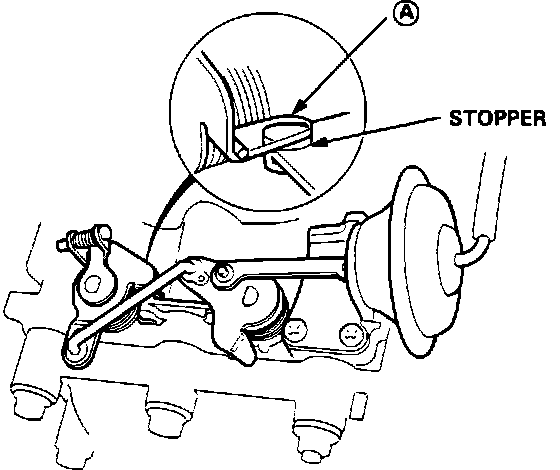

Variable Induction System: Testing and Inspection
NOTE: This section addresses the mechanical components of the CHAMBER VOLUME CONTROL SYSTEM. For information regarding vacuum solenoid controls, refer to COMPUTERIZED ENGINE CONTROLS.Chamber Volume Control Valve:

1. Apply vacuum to the control diaphragm assembly. If the diaphragm fails to hold vacuum, replace the diaphragm assembly.
2. Start engine and allow to idle.
3. Check for vacuum at the vacuum control diaphragm. Manifold vacuum should be present. If no vacuum is present, refer to COMPUTERIZED ENGINE CONTROLS.
4. Raise engine speed to 5000 RPM. Check for vacuum at the diaphragm vacuum hose. No vacuum should be present.
If vacuum is present during test 3 or test 4, refer to COMPUTERIZED ENGINE CONTROLS.
5. Check the bypass control linkages and shafts for binding, sticking, or excessive wear. If linkages do not operate smoothly, disassemble and clean the bypass assembly.